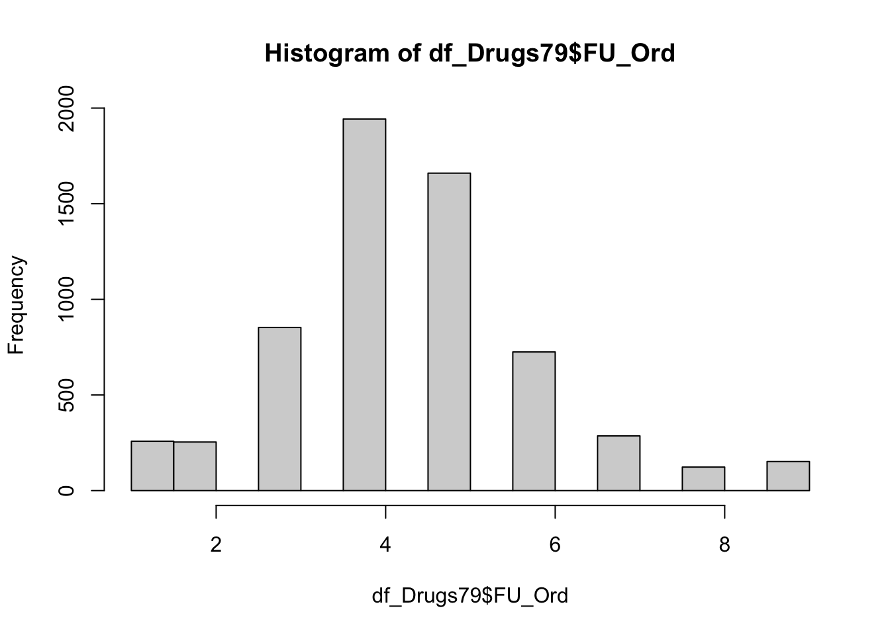
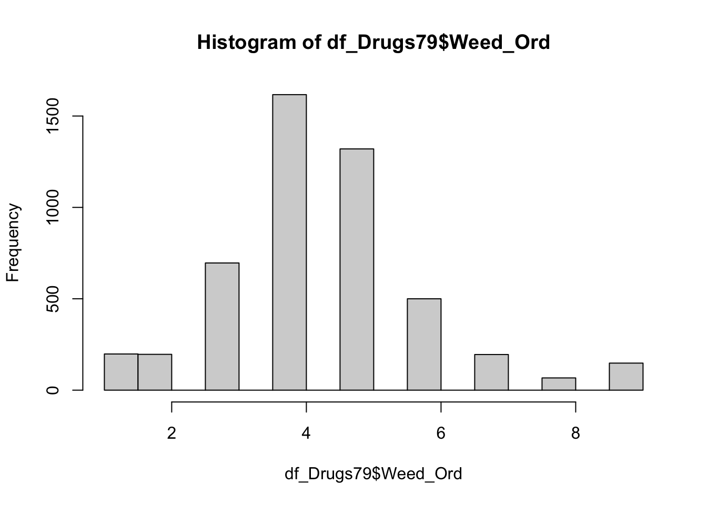
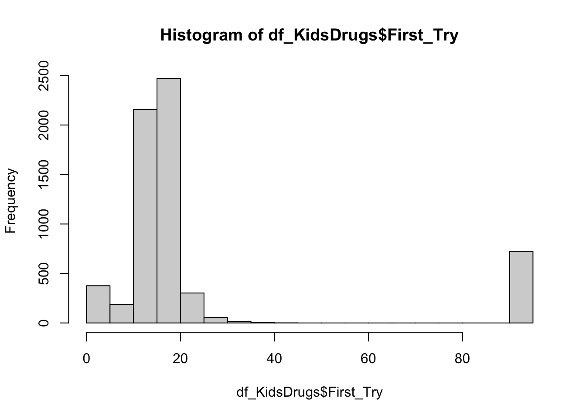
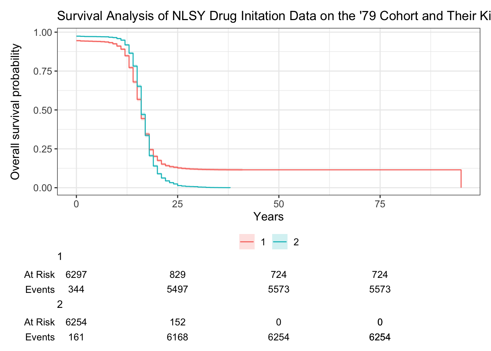

Survival Analysis
This is from my FYP workflow - I ran a survival analysis with some of the drug intiation data. I haven’t included the behavior-genetic component, it is just a plain old survival analysis. Nothing fancy but it works.
knitr::opts_chunk$set(echo = TRUE)
# set seed
set.seed(20200804)
library(psych)
library(polycor)##
## Attaching package: 'polycor'## The following object is masked from 'package:psych':
##
## polyseriallibrary(tidyverse)## ── Attaching core tidyverse packages ──────────────────────── tidyverse 2.0.0 ──
## ✔ dplyr 1.1.4 ✔ readr 2.1.5
## ✔ forcats 1.0.0 ✔ stringr 1.5.2
## ✔ ggplot2 4.0.0 ✔ tibble 3.3.0
## ✔ lubridate 1.9.4 ✔ tidyr 1.3.1
## ✔ purrr 1.1.0## ── Conflicts ────────────────────────────────────────── tidyverse_conflicts() ──
## ✖ ggplot2::%+%() masks psych::%+%()
## ✖ ggplot2::alpha() masks psych::alpha()
## ✖ dplyr::filter() masks stats::filter()
## ✖ dplyr::lag() masks stats::lag()
## ℹ Use the conflicted package (<http://conflicted.r-lib.org/>) to force all conflicts to become errorslibrary(devtools)## Loading required package: usethislibrary(remotes)##
## Attaching package: 'remotes'
##
## The following objects are masked from 'package:devtools':
##
## dev_package_deps, install_bioc, install_bitbucket, install_cran,
## install_deps, install_dev, install_git, install_github,
## install_gitlab, install_local, install_svn, install_url,
## install_version, update_packageslibrary(NlsyLinks)
library(ggplot2)
library(parameters)
library(dplyr)
library(gtsummary)
library(discord)
library(janitor)##
## Attaching package: 'janitor'
##
## The following objects are masked from 'package:stats':
##
## chisq.test, fisher.testlibrary(lm.beta)
library(matrixStats)##
## Attaching package: 'matrixStats'
##
## The following object is masked from 'package:dplyr':
##
## countlibrary(gt)
library(OpenMx)## OpenMx may run faster if it is compiled to take advantage of multiple cores.
##
## Attaching package: 'OpenMx'
##
## The following object is masked from 'package:psych':
##
## trlibrary(ACEsimFit)source("/Users/caileyfay/Documents/Research/GitHub/risky_gambling/risky_gambling_reapproach/data/KidsDemographics/KidsDemographics.R", echo = TRUE)##
## > new_data <- read_csv("~/Documents/Research/GitHub/risky_gambling/risky_gambling_reapproach/data/KidsDemographics/KidsDemographics.csv")## Rows: 11551 Columns: 6
## ── Column specification ────────────────────────────────────────────────────────
## Delimiter: ","
## dbl (6): C0000100, C0000200, C0005300, C0005400, C0005700, Y2267000
##
## ℹ Use `spec()` to retrieve the full column specification for this data.
## ℹ Specify the column types or set `show_col_types = FALSE` to quiet this message.##
## > names(new_data) <- c("C0000100", "C0000200", "C0005300",
## + "C0005400", "C0005700", "Y2267000")
##
## > new_data[new_data == -1] <- NA
##
## > new_data[new_data == -2] <- NA
##
## > new_data[new_data == -3] <- NA
##
## > new_data[new_data == -7] <- NA
##
## > vallabels <- function(data) {
## + data$C0005300 <- factor(data$C0005300, levels = c(1, 2, 3),
## + labels = c("HISPANIC", "BLACK", "NON-BLAC ..." ... [TRUNCATED]
##
## > vallabels_continuous <- function(data) {
## + data$C0000100[1 <= data$C0000100 & data$C0000100 <= 9999999] <- 1
## + data$C0000100 <- factor(data$ .... [TRUNCATED]
##
## > varlabels <- c("ID CODE OF CHILD", "ID CODE OF MOTHER OF CHILD",
## + "RACE OF CHILD (FROM MOTHERS SCREENER 79)", "SEX OF CHILD",
## + "DATE OF ..." ... [TRUNCATED]
##
## > qnames <- function(data) {
## + names(data) <- c("CASEID", "MCASEID", "CRace", "CSex", "CBirthYear",
## + "VERSION_R29_XRND")
## + return(da .... [TRUNCATED]
##
## > df_KidsDemographics <- qnames(vallabels(new_data))
##
## > remove(new_data)source("/Users/caileyfay/Documents/Research/GitHub/risky_gambling/risky_gambling_reapproach/data/79Demographics/79Demographics.R")## Rows: 12686 Columns: 9
## ── Column specification ────────────────────────────────────────────────────────
## Delimiter: ","
## dbl (9): R0000100, R0000300, R0000500, R0173600, R0214700, R0214800, R089884...
##
## ℹ Use `spec()` to retrieve the full column specification for this data.
## ℹ Specify the column types or set `show_col_types = FALSE` to quiet this message.source("/Users/caileyfay/Documents/Research/GitHub/risky_gambling/risky_gambling_reapproach/data/79Demographics/79Demographics.R")## Rows: 12686 Columns: 9
## ── Column specification ────────────────────────────────────────────────────────
## Delimiter: ","
## dbl (9): R0000100, R0000300, R0000500, R0173600, R0214700, R0214800, R089884...
##
## ℹ Use `spec()` to retrieve the full column specification for this data.
## ℹ Specify the column types or set `show_col_types = FALSE` to quiet this message.recode_missing_values <- FALSE
source("/Users/caileyfay/Documents/Research/GitHub/risky_gambling/risky_gambling_reapproach/data/Drugs79/Drugs79.R")## Rows: 12686 Columns: 14
## ── Column specification ────────────────────────────────────────────────────────
## Delimiter: ","
## dbl (14): R0000100, R0173600, R0214700, R0214800, R1403000, R1403300, R14036...
##
## ℹ Use `spec()` to retrieve the full column specification for this data.
## ℹ Specify the column types or set `show_col_types = FALSE` to quiet this message.df_Drugs79 <- df_Drugs79 %>%
mutate(did_interview = ifelse(
if_all(c(U1_Amphet, U1_Sedative, U1_Tranq, U1_Psych, U1_Heroin, U1_Narc, U1_Inhale, U1_Weed, U1_Coke, U1_Crack),
~ . == -5), 0, 1))
df_Drugs79[df_Drugs79== -1] <- NA # Refused
df_Drugs79[df_Drugs79== -2] <- NA # Dont know
df_Drugs79[df_Drugs79== -3] <- NA # Invalid missing
df_Drugs79[df_Drugs79== -4] <- NA # Valid missing
df_Drugs79[df_Drugs79== -5] <- NA # Non-interview
df_Drugs79 <- df_Drugs79 %>%
mutate(
Any_Drug_Use = ifelse(
is.na(U1_Amphet) & is.na(U1_Sedative) & is.na(U1_Tranq) & is.na(U1_Psych) & is.na(U1_Heroin) & is.na(U1_Narc) & is.na(U1_Inhale) & is.na(U1_Weed) & is.na(U1_Coke) & is.na(U1_Crack),
0,
1),
Any_Drug_Use = ifelse(did_interview == 0, NA, Any_Drug_Use),
First_Try = pmin(
U1_Amphet,
U1_Sedative,
U1_Tranq,
U1_Psych,
U1_Heroin,
U1_Narc,
U1_Inhale,
U1_Weed,
U1_Coke,
U1_Crack, na.rm = TRUE
))
df_Drugs79 <- df_Drugs79 %>%
mutate(FU_Ord = case_when(
First_Try <= 10 ~ 1,
First_Try <= 12 ~ 2,
First_Try <= 14 ~ 3,
First_Try <= 16 ~ 4,
First_Try <= 18 ~ 5,
First_Try <= 20 ~ 6,
First_Try <= 22 ~ 7,
First_Try <= 24 ~ 8,
First_Try >= 24 ~ 9,
First_Try == NA ~ 10
))
hist(df_Drugs79$FU_Ord)
df_Drugs79 <- df_Drugs79 %>%
mutate(Weed_Ord = case_when(
U1_Weed <= 10 ~ 1,
U1_Weed <= 12 ~ 2,
U1_Weed <= 14 ~ 3,
U1_Weed <= 16 ~ 4,
U1_Weed <= 18 ~ 5,
U1_Weed <= 20 ~ 6,
U1_Weed <= 22 ~ 7,
U1_Weed <= 24 ~ 8,
U1_Weed >= 24 ~ 9,
U1_Weed == NA ~ 10
))
hist(df_Drugs79$Weed_Ord)
source("/Users/caileyfay/Documents/Research/GitHub/risky_gambling/risky_gambling_reapproach/data/KidDrugs/KidDrugs.R")## Rows: 11551 Columns: 52
## ── Column specification ────────────────────────────────────────────────────────
## Delimiter: ","
## dbl (52): C0000100, C0000200, C0005300, C0005400, C0005700, C0733300, C07336...
##
## ℹ Use `spec()` to retrieve the full column specification for this data.
## ℹ Specify the column types or set `show_col_types = FALSE` to quiet this message.anyDuplicated(df_KidsDrugs)## [1] 0df_KidsDrugs <- df_KidsDrugs %>%
select(-ends_with("_oops"))
df_KidsDrugs <- df_KidsDrugs %>%
rowwise() %>%
mutate(First_Try = min(c_across(starts_with("1U_")), na.rm = TRUE)) %>%
ungroup() ## Warning: There were 5254 warnings in `mutate()`.
## The first warning was:
## ℹ In argument: `First_Try = min(c_across(starts_with("1U_")), na.rm = TRUE)`.
## ℹ In row 1.
## Caused by warning in `min()`:
## ! no non-missing arguments to min; returning Inf
## ℹ Run `dplyr::last_dplyr_warnings()` to see the 5253 remaining warnings.df_KidsDrugs <- df_KidsDrugs %>%
mutate(First_Try = if_else(is.infinite(First_Try), NA_real_, First_Try))
hist(df_KidsDrugs$First_Try)
#A bunch of kids must have thought it would be funny to say they were 95 when they first tried something. I am going to pull anyone who said they were less than five or older than 60 when they first tried something, and turn those values into NAs
#df_KidsDrugs <- df_KidsDrugs %>%
# filter(First_Try > 5,
# First_Try < 30)
hist(df_KidsDrugs$First_Try) #much better
sum(!is.na(df_KidsDrugs$First_Try))## [1] 6297df_KidsDrugs <- df_KidsDrugs %>%
mutate(FU_Ord = case_when(
First_Try <= 10 ~ 1,
First_Try <= 13 ~ 2,
First_Try <= 16 ~ 3,
First_Try <= 19 ~ 4,
First_Try <= 21 ~ 5,
First_Try <= 24 ~ 6,
First_Try >= 24 ~ 7,
First_Try == NA ~ 8,
))
#be careful if making this ordinal because of the filter
#creating the any drug ever variable for the survival analysis
df_KidsDrugs[df_KidsDrugs== -1] <- NA # Refused
df_KidsDrugs[df_KidsDrugs== -2] <- NA # Dont know
df_KidsDrugs[df_KidsDrugs== -3] <- NA # Invalid missing
df_KidsDrugs[df_KidsDrugs== -4] <- NA # Valid missing
df_KidsDrugs[df_KidsDrugs== -5] <- NA # Non-interview
df_KidsDrugs <- df_KidsDrugs %>%
mutate(Any_Drug_Use = ifelse(
is.na(First_Try),
0,
1))library(knitr)
library(dplyr)
library(survival)
library(ggplot2)
library(tibble)
library(lubridate)
library(ggsurvfit)##
## Attaching package: 'ggsurvfit'## The following object is masked from 'package:psych':
##
## %+%library(gtsummary)
library(tidycmprsk)## Warning: package 'tidycmprsk' was built under R version 4.5.2##
## Attaching package: 'tidycmprsk'## The following object is masked from 'package:gtsummary':
##
## triallibrary(condSURV)
#any drug use variable and first try are going to be used to run the survival analysis
Surv(df_Drugs79$First_Try, df_Drugs79$Any_Drug_Use)[1:10]## [1] NA? NA+ 12 11 NA+ 16 12 16 20 15s1 <- survfit(Surv(First_Try, Any_Drug_Use) ~ 1, data = df_Drugs79)
str(s1)## List of 18
## $ n : int 6254
## $ time : num [1:39] 0 1 2 3 4 5 6 7 8 9 ...
## $ n.risk : num [1:39] 6254 6093 6086 6079 6078 ...
## $ n.event : num [1:39] 161 7 7 1 1 4 4 2 17 14 ...
## $ n.censor : num [1:39] 0 0 0 0 0 0 0 0 0 0 ...
## $ surv : num [1:39] 0.974 0.973 0.972 0.972 0.972 ...
## $ std.err : num [1:39] 0.00206 0.0021 0.00215 0.00215 0.00216 ...
## $ cumhaz : num [1:39] 0.0257 0.0269 0.028 0.0282 0.0284 ...
## $ std.chaz : num [1:39] 0.00203 0.00207 0.00212 0.00213 0.00213 ...
## $ type : chr "right"
## $ logse : logi TRUE
## $ conf.int : num 0.95
## $ conf.type: chr "log"
## $ lower : num [1:39] 0.97 0.969 0.968 0.968 0.968 ...
## $ upper : num [1:39] 0.978 0.977 0.976 0.976 0.976 ...
## $ t0 : num 0
## $ na.action: 'omit' Named int [1:6432] 1 2 5 11 12 15 19 23 24 29 ...
## ..- attr(*, "names")= chr [1:6432] "1" "2" "5" "11" ...
## $ call : language survfit(formula = Surv(First_Try, Any_Drug_Use) ~ 1, data = df_Drugs79)
## - attr(*, "class")= chr "survfit"survfit2(Surv(First_Try, Any_Drug_Use) ~ 1, data = df_Drugs79) |>
ggsurvfit() +
labs(title ="Survival Analysis of NLSY Drug Initation Data on the '79 Cohort and Their Kids",
x = "Years",
y = "Overall survival probability") +
add_confidence_interval() +
add_risktable()
#not super helpful because most people aren't going to do drugs on their 1st birthday
survfit(Surv(First_Try, Any_Drug_Use) ~ 1, data = df_Drugs79) |>
tbl_survfit(
times = 2,
label_header = "**1-year survival (95% CI)**")| Characteristic | 1-year survival (95% CI) |
|---|---|
| Overall | 97% (97%, 98%) |
#median age at first try of a drug is 16
survfit(Surv(First_Try, Any_Drug_Use) ~ 1, data = df_Drugs79)## Call: survfit(formula = Surv(First_Try, Any_Drug_Use) ~ 1, data = df_Drugs79)
##
## 6432 observations deleted due to missingness
## n events median 0.95LCL 0.95UCL
## [1,] 6254 6254 16 16 16# I want to see if this varies by the parent and the kid drug data
#make a data frame with the parent Any_Drug_Use, and the kid _First_Try
df_KidsDrugsSkinny <- df_KidsDrugs %>%
select(c("First_Try","Any_Drug_Use","FU_Ord","CASEID","ExtendedID")) %>%
mutate(Group = 1)
df_Drugs79Skinny <- df_Drugs79 %>%
select(c("CASEID","ExtendedID","Any_Drug_Use","FU_Ord","First_Try")) %>%
mutate(Group =2)
df_DrugsSkinny <- rbind(df_KidsDrugsSkinny, df_Drugs79Skinny)
#Now I can run a survival analysis comparing groups
#median age for the 79ers and kids was 16 which is cool
survdiff(Surv(First_Try, Any_Drug_Use) ~ Group, data = df_DrugsSkinny)## Call:
## survdiff(formula = Surv(First_Try, Any_Drug_Use) ~ Group, data = df_DrugsSkinny)
##
## n=12551, 11686 observations deleted due to missingness.
##
## N Observed Expected (O-E)^2/E (O-E)^2/V
## Group=1 6297 6297 6785 35.1 102
## Group=2 6254 6254 5766 41.3 102
##
## Chisq= 102 on 1 degrees of freedom, p= <2e-16survfit(Surv(First_Try, Any_Drug_Use) ~ Group, data = df_DrugsSkinny)## Call: survfit(formula = Surv(First_Try, Any_Drug_Use) ~ Group, data = df_DrugsSkinny)
##
## 11686 observations deleted due to missingness
## n events median 0.95LCL 0.95UCL
## Group=1 6297 6297 16 16 16
## Group=2 6254 6254 16 16 16survfit2(Surv(First_Try, Any_Drug_Use) ~ Group, data = df_DrugsSkinny) |>
ggsurvfit() +
labs(title ="Survival Analysis of NLSY Drug Initation Data on the '79 Cohort and Their Kids",
x = "Years",
y = "Overall survival probability") +
add_confidence_interval() +
add_risktable() 
#I don't know what this means but the helpful tutorial said to do it
coxph(Surv(First_Try, Any_Drug_Use) ~ Group, data = df_DrugsSkinny) |>
tbl_regression(exp = TRUE) | Characteristic | HR | 95% CI | p-value |
|---|---|---|---|
| Group | 1.23 | 1.18, 1.27 | <0.001 |
| Abbreviations: CI = Confidence Interval, HR = Hazard Ratio | |||